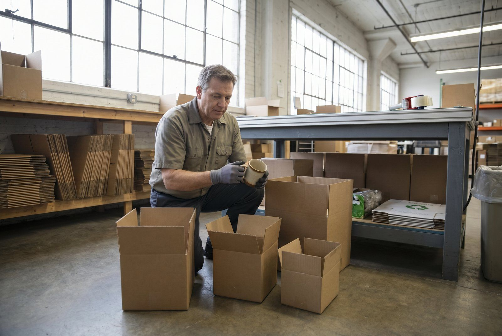
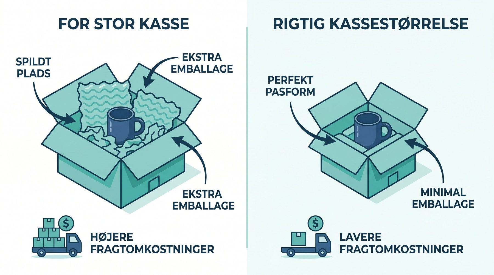

Emballage er en af de få udgifter per ordre du selv er herre over. Den typiske webshop bruger 6-17 kr. per ordre på kasse, tape, fyld og labels. Skal varen beskyttes ekstra, ryger den op omkring 25 kr.
Det lyder af lidt. På 2.000 ordrer om måneden er det 12.000-34.000 kr. om måneden. 144.000-408.000 kr. om året. Og materialeprisen er kun den del du kan se på fakturaen.
👉 Vil du have din emballage gennemgået? Kontakt SmartPack
Hvad går pengene til?
En typisk fordeling per ordre:
| Post | Kr./ordre (typisk) |
|---|---|
| Kasse | 4-10 |
| Tape | 0,50-1,50 |
| Fyldmateriale (pap, bobleplast) | 1-4 |
| Shipping-label | 0,30-0,80 |
| Følgeseddel / print | 0,50-1 |
| Total | 6-17 kr. |
De poster du ikke ser på fakturaen
Materialeprisen er toppen af isbjerget. Her er de fire poster de fleste glemmer at regne med.
Du betaler fragt for luft
Fragtmændene tager betaling efter den største af to tal: hvad pakken vejer, og hvor meget den fylder. Det sidste regnes ud som længde gange bredde gange højde i centimeter, delt med 5.000. En flaske på 400 gram i en alt for stor kasse bliver derfor faktureret som 1.500 gram.
For en webshop der sender 300 pakker om dagen kan for store kasser alene koste 50.000 til 200.000 kr. ekstra i fragt om året.
Kasserne fylder også på lageret
Tomme kasser og fyldmateriale skal stå et sted. En kvadratmeter lager i Danmark koster typisk 1.000 til 3.000 kr. om året når varme, forsikring og bundet kapital regnes med. Bruger du 50 m² på emballage, er det 50.000 til 150.000 kr. om året, før du har brugt en eneste kasse.
Tiden ved pakkebordet
En pakker der bruger to minutter på at finde den rigtige kasse og tre på selve pakningen, bruger fem minutter per ordre. Ved 200 kr. i timen er det 16,67 kr. per pakke. Færre kassestørrelser at vælge imellem sparer typisk 1-2 minutter per pakke. Ved 300 ordrer om dagen og 250 arbejdsdage er det 75.000 til 150.000 kr. om året.
Skader koster mere end kassen
En vare der bliver ødelagt undervejs koster i snit 200-500 kr. at rydde op efter: returfragt, ny forsendelse, kundeservice og som regel en ny vare. For lidt emballage er en af de hyppigste årsager. Men for meget emballage er ikke svaret, for så stiger fragten i stedet.
Overemballering: den dyreste vane
Overemballering er når pakken er større, tungere eller bedre beskyttet end varen har brug for. Det sker af to grunde:
- Der er ingen fast regel. Pakkeren tager den nærmeste kasse, ikke den rigtige.
- Bedre for stor end for lille. Det føles sikkert. Det koster penge hver gang.
Luften fylder anslået 35-50% af en gennemsnitlig kasse i dansk netbutikshandel. En stor del af den fragt du betaler, er altså luft. Kommer du fra 45% luft ned til 20%, falder fragten typisk 15-25%.
De tre steder du kan skære
1. Færre kassestørrelser
Den hyppigste fejl er 5-6 kassestørrelser og en vane med at pakke for stort. For stor kasse betyder mere fyld, højere fragt og en dårligere oplevelse når kunden åbner pakken.

Kig på dine egne ordrer: hvilke 3-4 størrelser dækker 90% af dem ordentligt? Skru ned til dem. Har du 12 størrelser i dag, er der typisk 150.000 til 400.000 kr. om året at hente ved 300 ordrer dagligt, når materialer, fragt, tid og skader tælles med.
Der følger mere med end pengene: pakkeren skal ikke vælge, indkøbet bliver enklere, pakketiden falder, og du løber ikke tør for én bestemt størrelse.
2. Mindre fyld
Fyld bruges når kassen er for stor til varen. Passer kassen, falder fyldet af sig selv. Så simpelt er det. Fyld er også branding for nogle webshops, silkepapir og stickers, og det er et valg du skal træffe bevidst, ikke noget der bare sker.
3. Køb større ind
Mange små webshops køber emballage hos den nærmeste grossist til dagspris. Med 2.000 ordrer om måneden og én kasse per ordre er det 24.000 kasser om året. Det er rigeligt til at forhandle en rigtig pris hjem. En krone mindre per kasse er 24.000 kr. om året.
Hvad du ikke skal skære i
Skaderne er modvægten. En kasse der er 30% billigere, men giver 1% flere skader, koster dig ved 2.000 ordrer om måneden 20 skader gange 350 kr. = 7.000 kr. Den billige kasse er altså den dyre. Regn altid kassen og skaderne sammen, ikke stykprisen alene.
Sådan hjælper SmartPack
SmartPack kan foreslå kassestørrelse ud fra hvad der er i ordren, når der pakkes. Det er der de for store kasser bliver fanget, og dermed også fyldet. Du kan også få opgjort hvor meget emballage der går til hvilke ordretyper, så du ved hvad du køber ind til.